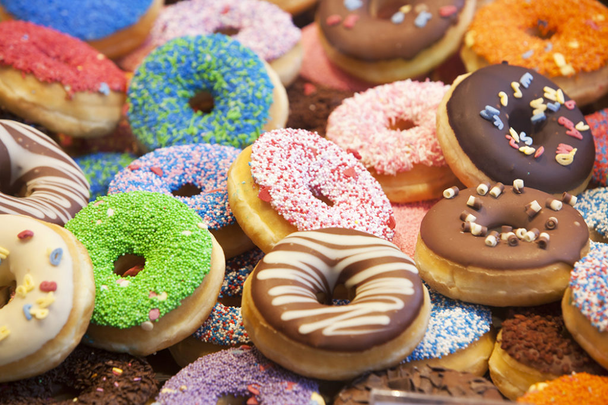
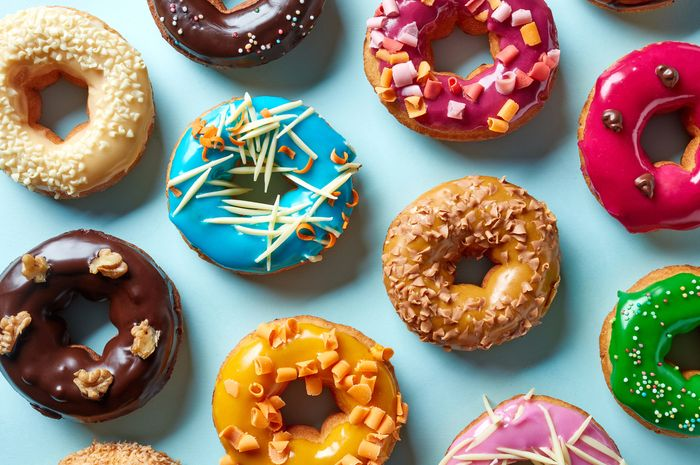
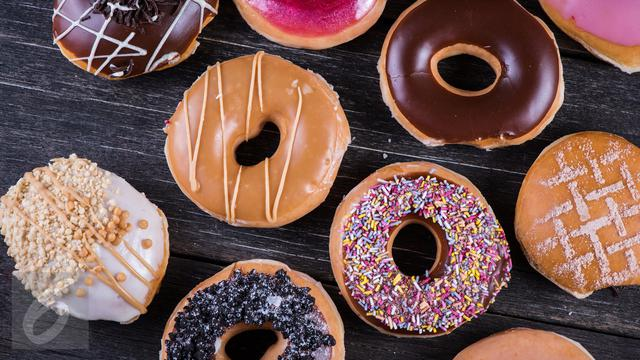

Tentang Kue Donat |
|
| .:: | |
3 FAKTA menarik kue donat yang enak dan sehatSiapa sih yang ga kenal kue yang satu ini? Kue popular yang berbentuk bulat dan memiliki ciri khas lubang ditengahnya. Yap,, Kue Donat pastinya, salah satu makanan favorit di seluruh dunia dengan memiliki cita rasa yang empuk dan manis selain itu kue ini juga memiliki varian topping yang menarik dan memikat. Bukan hanya itu kepopuleran kue ini membuatnya digemari banyak kalangan, selain bentuknya yang unik juga terdapat hari perayaan untuk memperingati jadinya kue ini. Wah.. mau tau kapan tanggalnya, simak beberapa fakta unik dibawah ini : 1. sejarah bentuk donat >Banyak yang belum mengetahui mengapa bentuk donut terdapat lubang ditengahnya, sebenarnya hal ini terjadi secara tidak sengaja oleh seekor sapi yang menginjak bagian tengah dari adonan ini sehingga membentuk lubang pada tengahnya dan menendang adodan tersebut sampai masuk kedalam wajan yang berisi minyak panas, Sungguh mengejutkan bukan? Hahahaha 2.Hari Perayaan donat
Selain sejarahnya yang unik ternyata kepopuleran makanan ini menjadikannya penting dimata masyarakat sehingga terciptanya hari perayaan nasional yang diperingati setiap tanggal 7 juni.. 3. Kandungan gizi donat
Ternyata Makanan ini dibuat bukan hanya mengenyangkan tapi adapun gizi dan vitamin yang dikandung didalamnya yang dapat menyehatkan jantung, jenis donat yang dimaksud adalah donat kentang.
|
|
€CopyRight Design |
|